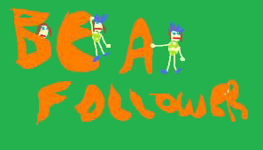

pseudo_classes


伪元素就是一个跟屁虫
我们今天要说的是伪元素before、after的妙用，请看下图：
没错，就是上面这张图，一个箭头？对，这是一个只用了一个标签做出来的箭头，如果你认真地思考了page1的练习题，那么这里你应该很清楚怎么做出来。
- 1、使用两个伪类，before、after来分别做出箭头的尖头和柄
- 2、用定位将其链接在一起
.pseudo_classes_l .arrow_down{
position: relative;
display: inline-block;
height: 20px;
width: 12px;
background-color: #c3c3c3;
left: 13px;
}
.pseudo_classes_l .arrow_down::after {
display: block;
content: "";
position: absolute;
width: 0px;
height: 0px;
border-style: solid;
border-width: 18px 19px 0 19px;
border-color: #C3C3C3 rgba(0, 0, 0, 0) rgba(0, 0, 0, 0) rgba(0, 0, 0, 0);
bottom: -18px;
left:-13px;
}
所以你可以试试下面这些图形是怎么做出来的？（答案才不是在github上呢，不用找了）